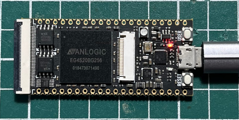
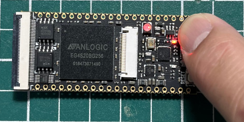

main.v
module main(btn, led);
input btn;
output reg [2:0]led;
initial begin
led = 0;
end
always @(posedge btn) begin
led = led+1;
end
endmodule
main.adc
set_pin_assignment {btn} {location=k16;}
set_pin_assignment {led[0]} {location=r3;}
set_pin_assignment {led[1]} {location=j14;}
set_pin_assignment {led[2]} {location=p13;}
完成

